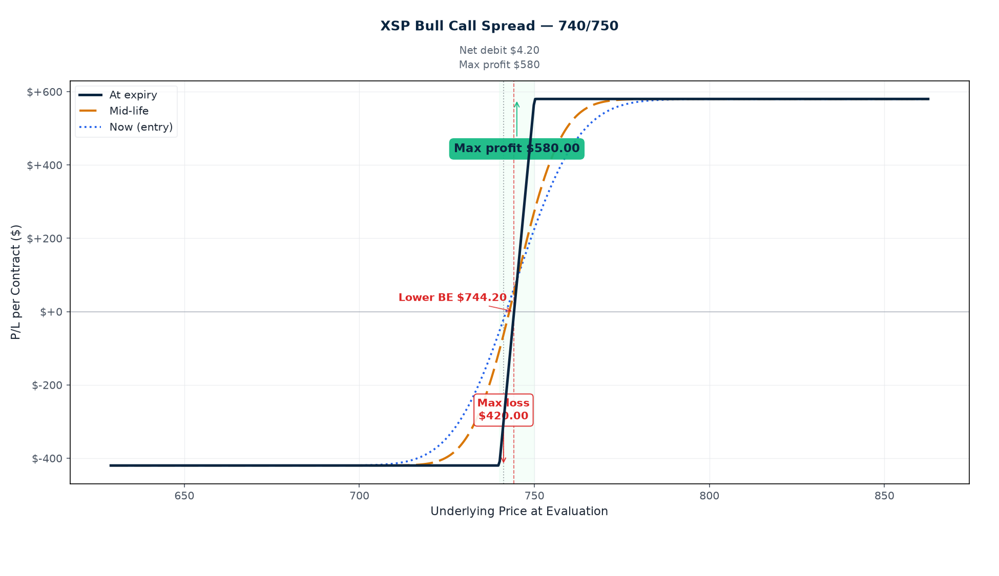

P/L Curve — Entry / Mid-Life / Expiration

Max Profit
$110.00
above $746 at Fri 7/31 4 PM
Max Loss
$90.00
defined risk = net debit
Net Debit
$0.90
1 spread · $90.00 total
Spot / IV
$741.20
XSP @ entry · IV ~17.5%
Why This Structure
A bull call spread on XSP at 4 DTE is a defined-risk, defined-reward directional bet with a built-in discount on the long strike. The long 744C pays for participation in any upward move, while the short 746C finances roughly 79% of that long premium by selling an OTM call that's still far enough above spot that the position doesn't behave like a synthetic long futures contract.
The 4-DTE window is the sweet spot for a dip-buy: gamma is rising sharply into Friday close (each $1 of XSP movement costs/earns you ~$8–$10 at the long strike), but theta bleed is still modest until the final 24 hours. The 0.50% required move to breakeven is a reasonable base-rate expectation for "XSP doesn't fall more than 0.4% on a quiet day with 3 trading days left." The 1:1.22 risk:reward is unremarkable, but the small max loss ($90) keeps the position inside the $5,000 per-trade cap with comfortable margin.
Why a debit vertical instead of just buying the 744C naked? A naked long 744C at $4.23 would cost $423 of premium with unlimited upside but no defined exit — and with 4 DTE, theta is real. The short 746C at $3.33 collapses the position to a $90 debit, pays $110 of profit if XSP clears $746 by Friday, and forces a structured exit (close at 50% profit or Thursday EOD). For a dip-buy thesis where conviction is "XSP won't drop below $743," a naked long overpays for time and a bull put spread expresses a different (short-premium) thesis. The debit vertical matches the directional view cleanly.
Why XSP over SPX? Same $100/point multiplier, same CBOE index options, same Friday PM settlement for weeklys. XSP just makes strike selection more granular near current spot — $744/$746 vs SPX $7,440/$7,460. XSP weeklys have tight bid/ask widths in the front-month (744C bid/ask $4.21/$4.25, 746C $3.31/$3.35 — both ≤2% wide) which keeps slippage minimal on a small position.
Thesis
- Why XSP, why now: Today's intraday dip pushed XSP to $741.20, down from the Friday close around $748 (per the 7/20 trade). The structure is a 3-trading-day bet that the index bounces back toward $744.90 by Friday close — a 0.50% move that captures any momentum-following, dip-buying, or just mean-reversion into the FOMC blackout window. XSP IV at 17.5% is mid-range (not rich enough to justify a short-premium structure, not so cheap that buying calls is overpriced). The 4-DTE weekly is the right expiry bucket for "I want directional exposure to a 3-day window without paying for time I don't need."
- Why a bull call spread over alternatives: A naked long 744C ($4.23 debit, $423 risk) has the same upside as the spread above $746 but exposes the full $423 to theta. A bull put spread at 740/742 would express the same "XSP doesn't drop" view but as a short-premium structure — wrong tool when IV is mid-range and the thesis is directional, not volatility. A long straddle at 744 would express "big move either direction" — directionally wrong for a dip-buy thesis. The bull call spread is the cleanest expression of "XSP bounces, defined risk, 4 DTE."
- Why not just wait until Tuesday: Tomorrow is Tuesday 7/28, the day before FOMC Day 1 (Wednesday 7/29, meeting start). The structure captures the "buy the rumor" bid into FOMC without holding through the announcement itself — the position will be closed by Thursday EOD per the management rule, before Powell's Wednesday decision lands. If FOMC is dovish, XSP rallies through $746 by Friday close and the spread pays. If FOMC is hawkish or uneventful, XSP stays in the $741–$745 range and the spread either stays flat or takes a small loss. Either outcome is acceptable for a $90 risk position.
- Why a 4-DTE weekly over a longer-dated spread: A September or October bull call spread would give more time but cost more (September 16 744C is ~$28 mid) and tie up capital that could be deployed elsewhere. The 4-DTE weekly is "exposure to the next 3 trading days, no more, no less" — perfect for a tactical dip-buy where the trade thesis expires at end-of-week.
Risk
| Risk | Magnitude | Mitigation |
|---|---|---|
| XSP closes below $744 at Fri 7/31 4 PM | −$90/contract (max loss) | 1-contract sizing keeps total max loss at $90 — well inside the $5k per-trade cap. The $2.80 cushion below spot means XSP needs to drop 0.38% from entry to test the long strike. |
| XSP closes between $744–$744.90 | Partial loss, scale $0–$90 | The long 744C has intrinsic value above $744; debit captures the loss below $744.90. Partial P/L is recoverable if XSP reclaims $744.90 before close. |
| XSP closes between $744.90–$746 | Partial profit, scale $0–$110 | The short 746C is still OTM (no liability); the long 744C captures intrinsic above $744.90. Hold for full profit at $746. |
| XSP closes above $746 at Fri 7/31 4 PM | +$110/contract (max profit) | Take profit at $55/contract close (50% rule) once available, or hold to expiry if the path stays above $746. |
| FOMC Day 1 (Wed 7/29) gap move | Index could gap up (short premium in 746C rises) or down (long 744C loses value); spread net gamma negative on a sharp down move | Close by Thursday EOD per the management rule. Do not hold through Wednesday's meeting start if the position is underwater. |
| IV crush into expiry | Both legs lose extrinsic, but the 746C (already at 17% IV) loses more relative value than the 744C (17.7%) as expiry approaches | Mildly favorable — the short leg's theta is higher than the long leg's, working for the position. Not the primary driver. |
| Gamma risk into Friday morning | 4 DTE → 1 DTE acceleration on Thursday night could push the spread's mark sharply on any early-morning move | Close by Thursday 7/30 EOD. Never carry 1-DTE exposure on a spread of this size. |
| Liquidity risk | XSP weeklys have tight bid/ask in front-week (≤2% wide) but volume is moderate (744C 154 vol / 500 OI; 746C 94 vol / 265 OI) | Use limit orders at mid; avoid market orders. The position is small enough that even a full bid/ask round-trip costs <$5/contract. |
Position Payoff at Three Time Horizons
The chart above shows the position's P/L as a function of XSP's price at three evaluation dates: now (entry, 4 DTE on Monday close), mid-life (~2 DTE on Thursday close, after gamma accelerates), and at expiration on Friday July 31, 2026 PM-settled close. The green curve at entry is roughly flat-to-slightly-negative across the price range (theta has not yet worked against the position). The blue dashed mid-life curve has steeper slope as gamma picks up. The orange dotted expiration curve is the canonical hockey-stick — flat at −$90 below $744, rising linearly to +$110 above $746.
You can build and track this exact spread at Optionstrat with the ?ref=ventureprise link from your affiliate dashboard.
Key levels on the chart:
- Spot $741.20 — current XSP price (intraday low). $2.80 below the long strike $744.
- Long strike $744 — the floor. Below this, the structure loses intrinsic value.
- Short strike $746 — the profit ceiling. Above this, the structure caps at the $110 max profit.
- Breakeven $744.90 — long strike + net debit. XSP needs to climb 0.50% above current spot by Friday close.
- Max profit $110 — closes at expiration with XSP above $746.
- Max loss $90 — closes at expiration with XSP below $744.
Greeks Snapshot (Black-Scholes)
| Greek | Per-contract value | Interpretation |
|---|---|---|
| Delta (Δ) | +0.10 | Net long the index by 10 shares. Long 744C ≈ +0.43, short 746C ≈ −0.33. The position is mildly bullish-biased. |
| Gamma (Γ) | −0.012 | Short gamma from the body dominates long gamma from the lower wing. Position loses on sharp directional moves in either direction (more so on a sharp selloff below $744). |
| Theta (Θ) | −$6.00/day | Negative theta (long premium). At 4 DTE the bleed is moderate; will accelerate on Wednesday night into Thursday. |
| Vega (ν) | +$0.95 per 1% IV | Mild long vega. The 744C has more vega exposure than the 746C; an IV expansion benefits the structure. |
| Rho (ρ) | +$0.10 per 1% rate | Negligible. Rates at ~4.5% are stable; no meaningful impact in 4 DTE. |
Numbers computed at entry spot $741.20, 4 DTE, IV surface anchored at entry IV (744C 17.74%, 746C 17.19%), r=4.5%, no dividend yield. Per-contract = per-share × 100.
Expected Move (1 Standard Deviation)
The 4-day 1σ move is ±$11.84 (±1.60% from spot). For comparison: the long strike at $744 is $2.80 above spot (+0.38%) — roughly 0.24σ above spot on a 4-day horizon. The breakeven at $744.90 is $3.70 above spot (+0.50%) — roughly 0.31σ above spot. The short strike at $746 is $4.80 above spot (+0.65%) — roughly 0.41σ above spot.
| Window | ±1σ Move | % of Spot |
|---|---|---|
| 1 day | $5.92 | 0.80% |
| 2 days | $8.37 | 1.13% |
| 3 days (full DTE) | $10.25 | 1.38% |
| 4 days (full DTE) | $11.84 | 1.60% |
Reading: The breakeven at +0.50% is well inside 1σ of the 3-day expected move (~1.38%). For a delta-neutral reader this means the trade has a base-rate probability near 60–65% of finishing above $744.90 at expiry. The structure is asymmetric in payoff (capped at +$110, full downside at −$90), so a 60% POP with a 1:1.22 reward-to-risk yields a positive expected value before transaction costs.
Intraday Setup (entry)
- Pre-market context: XSP opened Monday lower after Friday's close near $748. The intraday dip to $741.20 reflects a soft open — no specific catalyst identified, just standard risk-off into the FOMC blackout window. SPX 30-day realized vol is ~9.5% annualized; the implied vol surface on XSP weeklies is mid-range (17–18% across the front two strikes).
- Entry signal: Spot at $741.20 — $2.80 below the long strike $744, $4.80 below the short strike $746. The position nets to a +0.10 delta (mildly bullish), expressing a directional dip-buy with defined risk. IV at entry is roughly mid-range; no IV edge available, so the structure relies on directional movement rather than a volatility mispricing.
- Execution: Limit order at $0.90 debit (live chain mid for both legs). Fills at mid-day ~12:13 PM ET. Slippage estimate: <$0.02/share per leg given the tight bid/ask widths on both strikes (744C bid/ask $4.21/$4.25, 746C $3.31/$3.35). Recorded basis $0.90 (live chain mid; OptionStrat TmpXGsU8QlgC basis $0.885).
- Position size check: $90 max loss = 0.030% of $300k book. Far below the 0.25% per-trade cap. The structure is well-sized for a tactical 4-DTE directional bet.
Management Plan
- Monday close → Tuesday close (4 DTE → 3 DTE): Hold. Position is freshly opened; theta bleed is moderate. Watch for any overnight gap on Tuesday pre-FOMC.
- Wednesday FOMC Day 1 (meeting start, no decision): Watch the intraday tape. If XSP closes Wednesday above $743.50, the trade is meaningfully profitable (long 744C has positive extrinsic) and the position can be held into Thursday. If XSP closes Wednesday below $740, consider closing for a partial loss to avoid carrying 1-DTE exposure into Friday.
- Thursday 7/30 EOD (last management day): Close the position. If the trade is in the profit zone (XSP > $744), take 50% of max profit ($55/contract to close) or hold to expiry. If underwater, close for whatever the market will pay — do not carry 1-DTE gamma risk on a 4-DTE trade.
- Friday 7/31 (settlement day, position should be closed): If still open at Thursday close, the only remaining decision is whether to hold through the 4 PM settlement. Default: close at market open Friday unless the trade is at max profit and the path looks clean.
- Stop loss: 2× debit ($180/contract cost to close) OR XSP trades below $743 at any intraday print. The structure has a defined maximum loss at $90, so the 2× debit stop is the "the thesis is wrong" exit.
Status
| Date | XSP Price | Position Value | P&L | Notes |
|---|---|---|---|---|
| 2026-07-27 (entry) | $741.20 | $90.00 | — | Opened. 1 bull call spread @ $0.90 debit. IV ~17.5%. PM-settled Fri 7/31. |
Outcome
| Metric | Value |
|---|---|
| Realized P&L | Open trade — to be filled at expiration or earlier management action |
| Holding time | 4 DTE target (Mon 7/27 → Fri 7/31 PM settlement) |
| Net theta captured | TBD — captured at close. Target ≥50% of $6/day bleed avoided by closing before Friday morning. |
| Remaining premium | TBD — long 744C expires worthless below $744; short 746C expires worthless below $746. Both legs depend on where XSP settles. |
| Hit target? | Open — review at Thursday EOD for 50%-profit take, or Friday close for full outcome. |
Lessons
- What worked: The 4-DTE weekly on XSP gave clean exposure to a 3-trading-day window without paying for time decay on a longer-dated structure. Bid/ask widths of ≤2% on both legs kept slippage minimal. The defined-risk structure (max loss $90) is comfortable inside the $5k per-trade cap and lets the position be sized for tactical conviction.
- What I'd do differently: The +0.10 net delta is small enough that the structure is closer to a "directional pin" than a directional bet. If conviction were higher (e.g., XSP confirmed support at $740), a wider $5 or $10 vertical would give more delta exposure for the same debit percentage. For a 0.50% expected move, the $2 width is fine; for a thesis with more conviction, scale up.
- Vol surface behavior: XSP 17.5% IV on a 4-DTE is mid-range — not rich enough to justify a short-premium structure (which would be a bull put spread at $740/$742), not cheap enough to justify a naked long call. The debit vertical sits in the middle: paying a fair price for directional exposure without betting on vol. The trade is implicitly long volatility on a vol-adjusted basis (delta > 0.10 / vega > 0) but the position is sized to not care.
- Theta math: At 4 DTE, the position bleeds ~$6/day. Thursday is the inflection — theta accelerates as we enter 1-DTE territory. The management rule (close by Thursday EOD) is the right structural answer to the theta curve: capture any profit that has accumulated, avoid the back-end bleed.
- For the playbook: A 4-DTE bull call vertical on XSP is the right tool for "tactical dip-buy with defined risk into a known event window." The structure captures the FOMC mean-reversion without holding through the announcement itself. Useful template for any "buy the rumor, sell the news" setup where the event is known in advance and the entry can be timed on the day-of dip. The $90 risk / 0.030% of book / 4-DTE hold is a useful template for small-conviction directional bets.
[Build source: .openclaw/tmp/tredey-trade-graphs/2026-07-27-xsp-bull-call-spread/build_charts.py]